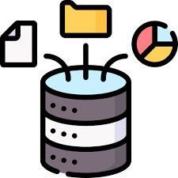

Exploring Food Waste Conversations on Social Media:
A Sentiment and Topic Analysis of Twitter Data
1. Introduction: Addressing the Food Waste Challenge
Food waste is a pressing global concern with profound environmental, economic, and social impacts.
It accounts for nearly 8-10% of global greenhouse gas emissions, contributes to food
insecurity, and results in an **economic loss estimated at $1 trillion annually**. Governments, organisations,
and researchers are actively exploring innovative ways to mitigate this issue.
One approach gaining traction is social media analysis, which provides valuable insights
into public perception, discussions, and sentiments about food waste. This study leverages
Natural Language Processing (NLP) and data science techniques to explore food waste
conversations on Twitter, aiming to identify key themes, emotions, and priority areas for intervention.
2. Problem Statement and Issues Addressed
The study aimed to understand how food waste is discussed in the digital landscape, particularly on
Twitter, and identify key themes and sentiments associated with the topic. Traditional research methods, such as
surveys and focus groups, have limitations, including small sample sizes and potential biases in self-reported data.
Social media analysis provides a unique opportunity to gather large-scale, real-time insights into
public opinion and engagement patterns.
Key Issues Addressed:
- üîç Identifying the prevailing sentiments and emotions in food waste discussions.
- üìå Understanding the major themes and concerns in public discourse.
- üìä Assessing engagement levels in different types of conversations.
- üåé Exploring the impact of major events, such as the COVID-19 pandemic, on food waste discussions.
3. Data Collection and Sourcing
The dataset for this study consisted of 39,449 tweets from 17,655 unique users,
collected over a three-year period (2019–2021) using the Twitter Application Programming Interface (API).
Search Term Development
An iterative process was used to refine search terms with the help of domain experts, ensuring relevance to food waste discussions.
The final search terms included:
- üçΩÔ∏è food waste
- ü•° food wastage
- üçï wasted food
- ü•ò wasting food
- ❄️ food spoilage
Hashtags such as #foodwaste, #zerofoodwaste, #stopfoodwaste, and #nofoodwaste
were also included to expand the dataset.
Filtering and Data Processing
- Geolocation Filtering: The dataset was restricted to tweets from Australia
based on user profile location data.
- Pre-processing Steps:
- Removal of retweet labels, mentions (@), hashtags (#), stop words,
punctuation, and non-ASCII characters.
- Conversion of emojis to text descriptions** (e.g., üòä ‚Üí ‚Äúhappy‚Äù).
- Developed Fake Tweet Classifier(Recall: 0.79) using Transformer model to remove bot-generated tweets to maintain data integrity.
- For fake and real tweet classifier we also considered user and metadata features like: account age, follower count, verified status, engagement ratio, profile picture presence
retweet count, source, favorite count(likes), image/video presence etc.
- These features along with the content will help us to identify more reliable tweets.
- üìÇ The data was stored in JSON format and analyzed using Python and BigML.
Analytics Platform and Data Analysis
A range of Natural Language Processing (NLP) techniques and machine learning models
were employed to analyze the dataset.
Results
Descriptive Analysis
Over a three-year period, a total of 39,449 tweets were collected from 17,655 unique users, providing a comprehensive view of food waste discussions on Twitter.
- Tweet Trends: The highest volume of tweets was recorded in 2019, followed by a decline in subsequent years.
- Device Usage: Twitter for iPhone was the most commonly used platform, surpassing the Web App and Twitter for Android.
- Content Types: Text-only tweets dominated the dataset, with photos being more common than videos or GIFs, which each constituted less than 1%.
- Retweets vs. Original Tweets: Retweets accounted for approximately 50% of all tweets, increasing each year. In contrast, original tweets made up 29% in 2019 and decreased over time.
- Bot Activity: The presence of bot-generated tweets grew significantly, reaching nearly 20% of all tweets by the end of 2021.
- Engagement Metrics: Total retweets exceeded 40 million per year, while likes peaked in 2021. Quotes and replies remained stable across the three years.
This analysis reveals evolving engagement patterns, automation trends, and shifts in public discourse around food waste on Twitter.
Food Waste on Twitter: A Sentiment Shift
Twitter conversations on food waste were mostly negative (46%), with fewer positive (27%) and neutral (23%) mentions.
Sentiment spiked negatively in March and August 2020 (over 50%), likely due to pandemic-driven food concerns.
By early 2021, neutral and positive sentiment surged, peaking at 41% in December.
Public perception of food waste is highly event-driven, highlighting the need for targeted awareness and action. üåçüí°
#FoodWaste #DataInsights
Emotion Evolution
Emotion engine was built by finetuning DistilRoBERTa-base on 20,000+ datapoints based on
Ekman's six basic emotions (anger, fear, disgust, joy, sadness, surprise, neutral).
Angry tweets about food waste spiked in March 2020, coinciding with a drop in joy tweets (17% to 13%).
Similar fluctuations in anger were observed throughout the period, though with variability.
By 2021, anger levels fell below 2019 levels, while sadness increased from 13% in 2020 to 16% in 2021.
Towards the end of 2021, joy tweets surged, while sadness, fear, and anger declined.
Surprise and disgust remained low overall, though **disgust spiked in June 2019, January 2021, and August 2021.
Topic Modeling
Topic modeling, an unsupervised machine learning technique, was used to extract key themes from food waste conversations on Twitter.
The Latent Dirichlet Allocation (LDA) algorithm grouped tweets into 13 topics, determined using coherence testing in Python with Gensim.
- Coherence Testing: Ensured meaningful topics by analyzing word similarities.
- BigML Visualization: Allowed better interpretation of topic distributions.
- Pre-processing Steps: Removed emojis, stop words, and non-language characters.
- Manual Review: Experts assigned topic names based on keyword relevance.
- Topic Assignment: Each tweet was given a topic probability score to classify it into the most relevant category.
This approach provided valuable insights into the major themes driving food waste discussions on social media.
Key Insights: Food Waste Conversations on Twitter
- 1️⃣ Food Waste & Its Broader Impact – Discussions linked food waste to climate change, packaging, and economics, highlighting their interconnection.
- 2️⃣ Dominant Discussion Themes – "Eating to save food waste," "Supply chain issues," and "Food waste research" were among the top topics.
- 3️⃣ Event-Driven Shifts – The COVID-19 pandemic fueled anger, while elections spiked economic concerns around food waste.
- 4️⃣ Seasonal Patterns – Discussions surged during holidays (Q4 2020 & 2021), likely due to increased food consumption.
- 5️⃣ Economic & Moral Outrage – Topics around food waste ethics and financial impact generated high engagement and strong emotions.
- 6️⃣ Evolving vs. Stable Topics – While governance and global food waste remained steady, disposal and supply chain issues gained traction over time.
üöÄ Takeaway: Public discourse on food waste is dynamic, influenced by global events, economic concerns, and seasonal shifts‚Äîoffering valuable insights for policy and advocacy efforts. üåç #FoodWaste #DataDrivenInsights
Sentiment Trends in Food Waste Topics
- Predominantly Negative Discussions – Most food waste topics had a negative sentiment, with global food waste (62%), economic impact (61%), and moral concerns (55%) driving frustration.
- Balanced & Positive Themes – Localized discussions (Australia) showed a mix of perspectives, while food packaging (38% positive) and research advancements (38% positive) sparked optimism.
üöÄ Insight: Public sentiment on food waste skews negative, especially around economic and moral issues, while innovation and packaging solutions drive positivity.
Emotional Trends in Food Waste Discussions
- Anger Dominates – 7 out of 13 topics were driven by anger, especially economic losses, food disposal, and global food waste, reflecting public frustration.
- Other Negative Emotions – Sadness was prevalent in food waste consumption topics, while fear appeared in discussions on Australian food policies and research.
- Moments of Positivity – Food packaging and research advancements had the highest joy levels, aligning with their optimistic sentiment trends.
üöÄ Insight: Anger fuels food waste discourse, especially around economic and global concerns, while innovation and sustainable packaging inspire hope.
Engagement Trends in Food Waste Discussions
- Negativity Drives Engagement – Very negative tweets saw the highest interaction, peaking during the COVID-19 pandemic, particularly in moral and economic debates on food waste.
- Disgust Sparks Reactions – Tweets expressing disgust had the highest engagement (median score: 58), outperforming anger, fear, and neutral sentiments.
- Shifting Interest in Packaging – Food waste packaging tweets had low engagement in 2019 but became one of the most-engaged topics by 2021, reflecting a growing focus on sustainability.
üöÄ Insight: Polarizing and emotional discussions‚Äîespecially moral and economic debates‚Äîdrive engagement, while sustainability topics are gaining traction.
Conclusion: Key Takeaways and Future Directions
This study demonstrates the power of social media analytics in understanding public attitudes toward food waste.
Key Takeaways:
- ✔ Public sentiment is largely negative, dominated by anger and frustration about corporate and policy failures.
- ✔ Engagement is highest for subjective and emotional tweets, especially those that express outrage or moral concerns.
- ✔ Policy and scientific discussions are objective but receive lower engagement, highlighting the need for more effective communication strategies.
- ✔ Combining facts with emotionally driven narratives can increase public engagement and drive action.
Future Work:
- üìä Real-time tracking of food waste discussions to detect emerging trends.
- ü§ñ Machine learning-based sentiment prediction to forecast public responses to food waste policies.
- üåç Collaboration with policymakers and NGOs to design evidence-based food waste reduction campaigns.
My Professional Journey
I began my career as a Quality Assurance Analyst at TechMahindra Ltd. in India, where I collaborated with stakeholders, developers, and business analysts to gather requirements, design test plans, execute manual testing, and report defects. This role gave me a broader and deeper understanding of systems, pushing me to think critically about potential failure points and their impact on clients.
Driven by problem-solving, I built an in-house automation tool that reduced 80% of manual efforts in testing SOAP services for defect fixes. This innovation led me to a Software Developer role in the Automotive Retail-Dealership sector, where I worked with an incredible team that helped me refine my software development skills, system design, integration, and agile practices.
My passion for Artificial Intelligence (AI) dates back to 2009 when I first encountered the concept in my studies. The idea of building intelligent systems that can mimic human behaviour fascinated me. With a strong desire to explore AI further, I migrated to Australia and completed a Master’s in Computing (Advanced) at the Australian National University.
This led me to a Data Scientist role at Monash Data Futures Institute (Monash University), where I collaborated with leading researchers and universities across Australia. I worked on data-driven, evidence-based analytics systems aimed at helping policymakers design impactful intervention strategies. This experience broadened my perspective, allowing me to solve problems beyond commercial settings and engage in social impact work.
AI is vast, with immense potential to drive both business and societal change. I am eager to expand my expertise and explore opportunities where AI can be leveraged ethically and responsibly for societal benefit.
I’d love to connect with like-minded professionals to exchange ideas and collaborate. Feel free to send me a message—I look forward to engaging with you!
Soft Skills
üöÄ Passionate about AI
üîÑ Adaptable and Resilient
ü߆ Analytical Thinking & Problem Solving
ü§ù Teamwork and Collaboration
üìä Stakeholder Management
üì£ Translating Technical Insights for Clients
üîç Attention to Detail
Technical Skills

Programming (Python, Java, R)
Data & Statistical Analysis

Machine Learning

Database (Oracle, PostgreSQL)
Cloud Computing (AWS, Azure)